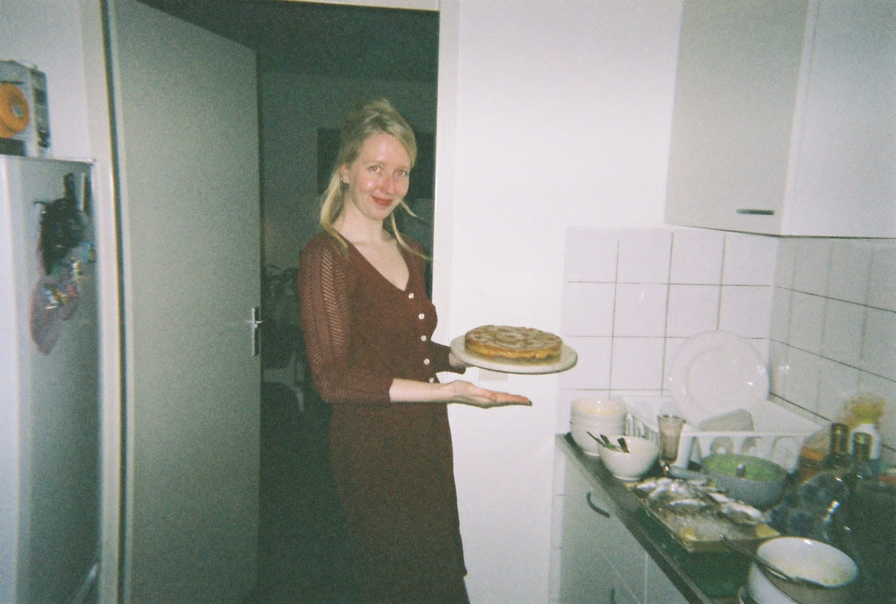

Opa's Tarte Tatin

How to make the most beautiful Tarte Tatin
This recipe was created by my lovely grandfather, who was always working in the kitchen. Food was his lovelanguage and he loved to share it with his family. My grandmother's specialty is something called 'boterkoek', translated literally in buttercookie. But one of my grandfathers specialties was definitly Tarte Tatin. The ingredient list is fairly easy but creating the right sort of caramel can be difficult. My grandfather collected all his recipes on his computer. When he passed away in 2018 my mother shared everythin he made with me,I always had the dream to create a book from it. But a website seem like a good practise too.
History
At the end of the last century, the Tatin sisters from Lamotte Beauvron in France had to earn a living by baking cakes. Their father's favorite cake became world famous. Yet this apple pie actually came about by accident. One of the sisters had forgotten to line the bottom of the tart tin with dough before placing the apples in it, so for convenience's sake, she placed the dough over the apples and slid the tin right into the oven. After baking she turned the cake and the result was amazing: a crunchy cake base with soft apples in a delicious soft caramel. Well-known star restaurants such as Maxims in Paris also found the Tarte des demoiselles Tatin so special that they put it on their menu.
I personally find this story extremely unlikely. If this happened then the aforementioned (professional!) sister Tatin must have been very confused or had a serious memory disorder. I therefore preferred to call this delicious pastry “Alzheimer Apfelstrudel”.
Ingredients
The Dough
- 125 grams of flour
- 80 grams of cold butter, cut in little squares
- 1 tsp of powdered sugar
- a pinch of salt
- one egg yolk
- 2 tbsp cold water
The inside
- 3 apples (golden delicious)
- 80 grams of butter
- 125 grams of christal sugar
Apricot jelly
- 1 pot Apricot jam
- a piece of lemon skin
- tbsp of water
How to make this pie
- Start by making the dough. Use your fingertips and kneed the flour, powdered sugar, salt and butter together until it forms one. Whip the eggyolk and water together, add the liquid to the dough and kneed it together until it's one. Let the dough rest in the fridge for at least an hour in aluminum foil
- Preheat the oven on 190 degrees celsius
- Once the oven is the right temprature, butter the (ceramic, 24cm ø)cakeform and put it in the oven to make it hot.
- Skin the apples and remove the core of the apple, cut the apple in slices of about 0.5 cm. You need to have round slices with a hole inside of it.
- Melt the butter on low temprature and add the sugar once all butter is melted. Keep stiring until it caramelizes.
- The buttery sugar will turn brownish quite fast, taste it to make sure it has the caramel flavour.
- Make sure to have a glass of cold water next to the pan in case the sugar begins to burn, this will stop the burning process.
- Take the pan from the stove once it's finished and pour the liquid into the cakeform. Watch out, this may cause the liquid to bubble because it is poured into a hot form!
- Lay the apples in the form starting in the middle, and stack the apples on top of each other to the sides of the form. It may seem like a lot of apples but use them all!
- Put the form back into the oven an heat it for about 35 minutes, this way the liquid of the apples get out and everything gets together in a lovely way!
- Meanwhile take the dough from the fridge and let it get to room temprature in about 20 minutes. Roll the dough out in a circle of 26 cm in diameter.
- Once the apples have been in the oven for 35 minutes you can get them out and place the dough on top of the apples. Make sure it's airtight. Quickly put the cake back into the oven an bake it for another 25 minutes on 190 degrees celcius.
- After 25 minutes get the pie out and let it rest and set for 20 minutes before you flip it onto a plate.
Don't forget the Abricot Jelly!
- Put the abricot jam together with the lemon skin and water into a pan an bring it to a boil. Boil it for about 5 minutes, seeve it and put it back into the pot (this one needs to be cleaned!)
- You can use this jelly for a couple of pies, keep it in the fridge and just heat up two table spoons and add it on top of the pie.
Back